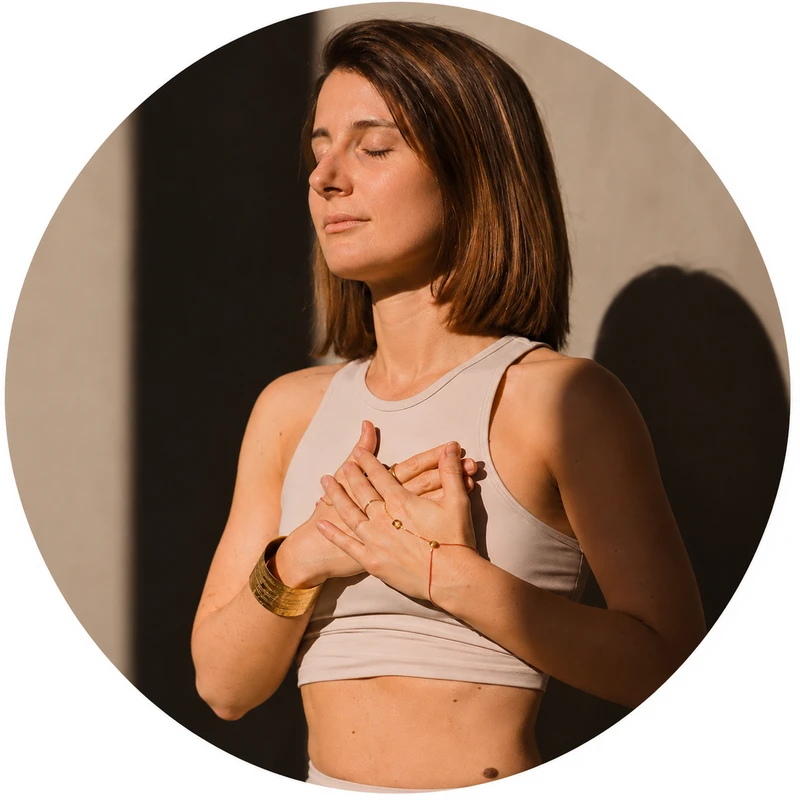

A chi desidera rallentare
Per chi sente il bisogno di creare una pausa nella quotidianità, ritrovare un ritmo più lento e dedicarsi uno spazio personale.

Radica Yoga · Ticino e online
Uno spazio per tornare ad abitare il corpo attraverso il movimento, il respiro e i cinque sensi. Senza dover essere perfetti, semplicemente presenti.
Chi sono

Ciao, sono Valentina.
Insegno yoga e sono anche una maestra di scuola.
Non sono la persona che si sveglia alle cinque del mattino per meditare guardando l’alba.
Amo dormire, bevo caffè, procrastino e qualche volta anche il saluto al sole deve aspettare.
Eppure, prima o poi, torno sul tappetino.
Per me lo yoga non è mai stato una questione di perfezione.
L’ho incontrato in un periodo complesso della mia vita, quando sentivo il bisogno di ritrovare un contatto con me stessa e con ciò che provavo.
Non è stato amore a prima vista.
Non ho trovato risposte immediate.
Ma pratica dopo pratica, anche grazie alle insegnanti incontrate lungo il cammino, ho iniziato a scoprire il valore del respiro, del movimento e della presenza.
Ho imparato che non dobbiamo necessariamente far sparire ciò che sentiamo.
Possiamo anche provare a restare in ascolto.
Radica Yoga nasce proprio da qui: dal desiderio di creare uno spazio in cui tornare ad abitare il corpo.
Uno spazio autentico, in cui non serve essere sempre pronti, flessibili o perfettamente in equilibrio.
Basta arrivare così come siamo.
E magari, insieme, srotolare il tappetino.
A chi mi rivolgo
Non serve essere perfetti, flessibili o avere tutte le risposte. La pratica può iniziare semplicemente dal desiderio di ascoltarsi.
Per chi sente il bisogno di creare una pausa nella quotidianità, ritrovare un ritmo più lento e dedicarsi uno spazio personale.
Per chi desidera esplorare il movimento, il respiro e le sensazioni corporee con curiosità e senza giudizio.
Per chi vuole avvicinarsi allo yoga o continuare a praticare in un ambiente che accoglie la propria esperienza, anche nelle giornate meno semplici.
Il mio approccio
Attraverso il movimento, il respiro e l’ascolto dei cinque sensi, creo pratiche che incoraggiano una relazione più presente e consapevole con il proprio corpo.
La pratica inizia da ciò che senti oggi, senza dover raggiungere una forma ideale.
Il respiro accompagna il movimento e invita a portare attenzione al momento presente.
Vista, udito, tatto, olfatto e gusto diventano riferimenti per osservare il modo in cui entriamo in relazione con l’esperienza.
Il valore della pratica non si misura dalla posizione raggiunta, ma dall’esperienza che viviamo mentre la attraversiamo.
Le pratiche
Pratiche per esplorare il movimento, il respiro e l’ascolto del corpo, con ritmi e modalità differenti.

Una pratica lenta e profonda, con posizioni mantenute più a lungo e un invito costante all’ascolto delle sensazioni corporee.
Uno spazio per osservare il respiro, incontrare la quiete e concedersi il tempo necessario, nelle sedi in cui insegno e online.

Una pratica che unisce la cura delle posizioni dell’Hatha alla fluidità del Vinyasa, in cui ogni gesto nasce dal respiro.
Uno spazio per dare energia al corpo, costruire presenza e attraversare il movimento con consapevolezza, senza inseguire la forma perfetta.
Come funziona
Esplora le proposte di Radica Yoga e individua quella che senti più vicina alle tue esigenze.
Scrivimi per conoscere disponibilità, modalità di partecipazione e informazioni pratiche.
Insieme scegliamo la pratica e la modalità più adatte a te, in sede oppure online.
Arriva così come sei e concediti il tempo di vivere la pratica, un respiro alla volta.
Dove praticare
Ovunque tu sia
FAQ
No, con me non serve essere perfetti o particolarmente flessibili. Se sei alla prima esperienza, scrivimi e capiamo insieme quale pratica può essere più adatta a te.
Nello Yin Yoga privilegio ritmi lenti e posizioni mantenute più a lungo. Nell’Hatha Vinyasa Yoga propongo una pratica più dinamica, in cui il respiro accompagna il movimento.
Dipende dallo studio e dalla pratica. Scrivimi e ti dirò cosa serve per la lezione che hai scelto.
Insegno a Spazio Munay a Chiasso, a Yoga Space Lugano e online. Il calendario con gli orari è in arrivo: nel frattempo scrivimi e ti racconto le disponibilità.
Sì, propongo anche la pratica online. Scrivimi e ti racconto le proposte e le disponibilità attuali.
Scrivimi dal modulo di contatto: ti darò tutte le informazioni sulle pratiche, sulle sedi e sulle modalità di iscrizione.
Contatti